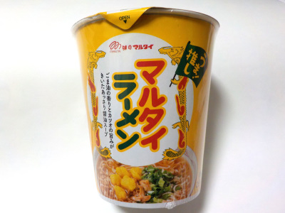
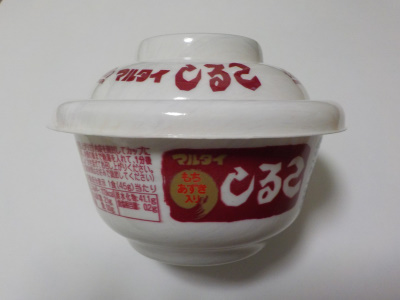
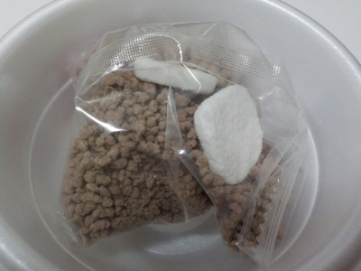
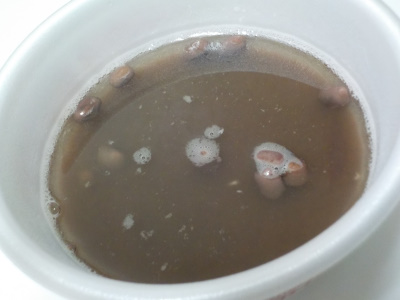

マルタイの縦型マルタイラーメン
2023/02/24

薄味のラーメンですね。
なんとなくそうめんみたいな感じがしました。スープが暖かいのでにゅう麺じゃない？って気がしましたが、にゅう麺よりもそうめんっぽいって思いました。
何故かな？
福岡県福岡市西区今宿青木1042-1
2023/02/24

薄味のラーメンですね。
なんとなくそうめんみたいな感じがしました。スープが暖かいのでにゅう麺じゃない？って気がしましたが、にゅう麺よりもそうめんっぽいって思いました。
何故かな？
2022/09/18

カップが付いているのは手軽に作って食べれていいですね。

中身です。サラサラの粉末じゃないんですね。こうすることによって、何かしらの効果があって美味しくなるんだろうな。

お餅は比重が重いみたいで沈んでしまいました。
甘いのは甘いですが、あっさりめだと思いました。濃い味の食べ物を食べた後にこれを食べたので、よけいに薄く感じたのかもしれません。